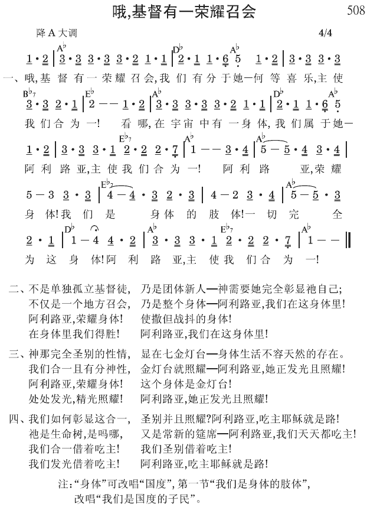

约13:34 我赐给你们一条新诫命，乃是叫你们彼此相爱，正如我爱你们，为使你们也彼此相爱。
约13:35 你们若彼此相爱，众人因此就认出你们是我的门徒了。
对团体生活的渴慕，乃是神所创造的
人都渴慕过一种团体的生活，这个渴慕来自我们天然的组成。在我们天然的组成、天然的生命里，我们都渴慕合群，在团体中与别人一同生活。
创世记一章二十六节神先说，“我们要…造人，”然后说，“使他们管理…。”前面的“人”是单数，但后面的“他们”（“人”的代名词）却是复数。神是造一个人，还是造许多人？神为什么用单数的“人”，然后又用复数的“他们”？祂是造一个人，还是造许多人？答案是：神在一个人里造了许多人。或者可以说，神所造的一个人包括了许多人。这意思是说，在神的心意里，人是团体的。神不是造一个亚当，然后造一个亚伯拉罕，再造一个大卫等等。神乃是造一个团体人─一个人包括所有的人。在神的心意里，祂所作的乃是一件团体的事。所以我们都必须看见，对团体生活的渴慕乃是神在人性里所造的。
召会生活是真正的团体生活
在基督里，我们都有同一个生命，并且因着这共同的生命，我们有共同的性情和共同的渴慕。我们得救后，里面马上就渴慕和其他真基督徒接触并交通，这是对团体生活的渴慕。召会生活乃是真正的团体生活。
我们必须知道，我们若想要过某种生活，就必须有某种生命。神造人，给人一种渴慕活在团体里的生命，但这生命受到破坏和毒害。因此，一面我们因着有神造的天性，渴慕与别人一同生活；另一方面，因着我们人的生命受到撒但的破坏、残害，在我们堕落的天性里，没有正当地生命来过团体生活。
但现在我们有了基督，基督是奇妙的。祂是那共同的因素、共同的元素，使我们能在团体生活中是一，而彼此相爱（罗十二10）。我不认识所有弟兄的名字，但我仍然非常爱他们，只因他们是在主里的弟兄。在所有的弟兄中间有一个共同的元素，这个元素就是基督。基督乃是使我们能彼此相爱的元素。此外，基督在我们里面乃是生命，这生命有能力使我们彼此相爱 （《传扬高品福音的生活》五六至五九页）。
参读：《传扬高品福音的生活》第六章。
